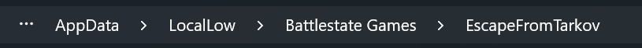
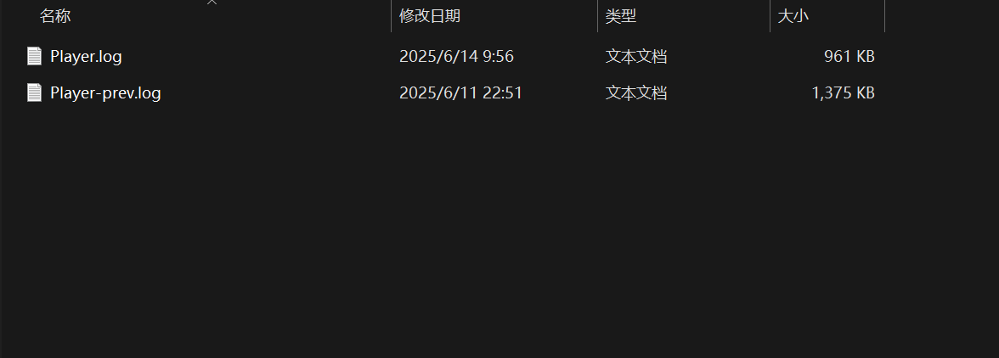

哦EFT，我的EFT
怎么发现这个问题的？
这是一个晴朗的下午，少年新买了个键盘但散热架还没到（哦笔记本，我的笔记本）。因为桌面空间实在不够，为了游戏的舒适性，少年把键盘架到了笔记本键盘的上面，玩了一段时间，因为键盘下面的支撑片压到了电脑的电源键，几秒后电脑强制关机，再打开游戏便出现这个问题，只要是局内游戏，画面将间歇性卡顿，时间间隔很短（一顿一顿的，一秒好几次），在卸载游戏文件后再安装回来问题依旧，困扰了少年一段时间。
解决办法：删除c盘中相关游戏日志即可
游戏日志在C盘的存储路径

错误的日志文件示例
和大部分单机游戏的存档一样，其部分日志文件是存储在c盘当中的，所以单纯的删除游戏文件是行不通的。那么为什么日志文件会影响游戏运行呢？
少年在这里猜测是：强制关机导致日志文件未正常关闭，在重新启动游戏时，游戏试图访问日志但却无法正常访问，它俩反复拉扯导致游戏卡顿。
就很有趣